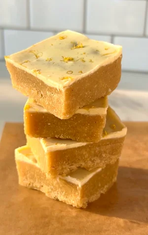

No Bake Lemon Bars (buttery, refreshing 10-minute summer dessert)
These no bake lemon bars are one of my all-time favourite summer desserts. They're incredibly simple to make — all you need is about 10 minutes and a food processor or high-powered blender.
The first time I made these lemon bars, I ended up making them every week for the next month (lol). They're truly the most refreshing dessert for those sunny days when it's too hot to turn the oven on but your sweet tooth is still calling.
Made with almond flour and oat flour, these bars contain healthy fats and a little extra protein, which helps make them more balanced and satisfying than traditional lemon desserts. The almond flour gives them a rich, buttery texture while keeping the recipe naturally gluten free, and the combination of fresh lemon juice and lemon zest is what gives them that vibrant flavour that makes lemon desserts so addictive.
They're also perfect for meal prep. Simply make a batch, store them in the freezer, and let each slice thaw for about 10 minutes before enjoying for the best texture. If you prefer something bite-sized, you can also roll the mixture into lemon bites or lemon energy balls instead of slicing them into bars.
These no bake lemon bars are ideal when you're craving a more decadent lemon dessert but don't have the time (or the desire) to make traditional baked lemon bars. They deliver the same bright, refreshing flavour, but with no oven time and minimal prep.
a batch of these also keeps brilliantly in the freezer, so it's worth making a double batch while you're at it. slice them before freezing so you can grab individual portions straight from the freezer and let them thaw for ten minutes before eating. they somehow taste even better ice-cold on a warm day.
looking for another no bake refreshing sweet treat? my mango yogurt bites are just what you need, or try my no bake brownie batter bars if you're in more of a chocolate mood.
Frequently Asked Questions
Are these lemon bars gluten free?
Yes! These no bake lemon bars are naturally gluten free because they're made with almond flour and oat flour instead of traditional wheat flour. If you are highly sensitive to gluten, make sure to use certified gluten free oat flour as regular oat flour can sometimes be cross-contaminated during processing.
How should I store no bake lemon bars?
Store the bars in an airtight container in the freezer for up to 2 months or in the refrigerator for about 5 days. They need to stay cold to hold their shape, so don't leave them at room temperature for more than 15 to 20 minutes. Let each slice thaw for about 10 minutes from frozen before eating for the best texture.
Can I make these into lemon energy bites or balls instead of bars?
Absolutely. Simply roll the mixture into small balls instead of pressing it into a pan. Chill them in the fridge or freezer until firm. They make great bite-sized lemon treats and are perfect for meal prep.
Are these no bake lemon bars dairy free?
The recipe includes 20g of butter, so in its original form it is not dairy free. To make it dairy free, substitute the butter with melted coconut oil or a plant-based vegan butter — both work really well and the texture of the bars will be very similar.
Can I use bottled lemon juice instead of fresh lemon?
Fresh lemon is strongly recommended for the best flavour. Bottled lemon juice lacks the bright, zesty quality of fresh juice and is often more acidic and slightly bitter. The fresh lemon zest in this recipe is especially important for flavour — it's where a lot of that bright, citrusy punch comes from — and you won't get that from a bottle. If you can, always use fresh.
Why are my no bake lemon bars crumbly?
If the bars are crumbling when you try to slice them, they may need more time in the freezer to set fully — make sure they've been freezing for at least 40 minutes. Another common cause is that the mixture wasn't pressed firmly enough into the pan. Use the back of a spoon or the bottom of a glass to press it down as firmly as possible before freezing. The butter and maple syrup act as the binder, so also double check you used the right amounts.
Can I add toppings to these no bake lemon bars?
Yes, definitely! These bars are wonderful topped with melted white chocolate (as the recipe suggests) and fresh lemon zest, but you can also add a dusting of powdered freeze-dried lemon, a drizzle of refined sugar free white chocolate, or a light sprinkle of flaky sea salt for contrast. Fresh edible flowers like chamomile also look stunning on top if you're making these for a occasion.
What is the difference between these no bake lemon bars and traditional lemon bars?
Traditional lemon bars have a baked shortbread base and a cooked lemon curd filling that requires eggs and sugar. These no bake lemon bars skip the oven entirely and are made with almond flour and oat flour, naturally sweetened with maple syrup, and rely on freezing rather than baking to set. They're much quicker to make, naturally gluten free, and have a more fudgy, energy-bite-like texture compared to the crumbly pastry and wobbly curd of the traditional version.
Can I add a creamy layer to these no bake lemon bars?
Yes! If you want a more layered effect similar to traditional lemon bars, you can spread a thin layer of whipped coconut cream or coconut yogurt on top of the pressed base before freezing. It adds a light, creamy contrast to the denser almond flour base and looks really beautiful when sliced. Let it freeze fully before adding any white chocolate topping so the layers stay distinct and don't blend together.
How many calories are in these no bake lemon bars?
Each bar (one of 8 servings) contains approximately 240 calories, with around 5.5g protein, 22.5g carbohydrates, and 16.7g fat. The healthy fats come primarily from the almond flour, which also contributes fibre and vitamin E. While they are more calorie-dense than some lighter treats, the combination of protein, fibre, and healthy fats means they are genuinely satisfying and tend to prevent the kind of energy dip you get from refined sugar snacks.
Pro Tips
- Use fresh lemon juice instead of bottled for the best flavour.
- Press the bars firmly into the pan so they hold their shape when sliced.
- Let them thaw for about 10 minutes before eating for the best texture.
- Add extra lemon zest on top of the white chocolate layer before it sets — it makes them look beautiful and intensifies the lemon flavour.
No Bake Lemon Bars

Ingredients
Instructions
- Step 1: Melt the butter.
- Step 2: Add all ingredients to a food processor or high-powered blender and blend until fully combined.
- Step 3: Transfer the mixture to a small lined container and press down firmly and evenly.
- Step 4: If topping with white chocolate, melt it and spread over the top.
- Step 5: Sprinkle with extra lemon zest.
- Step 6: Freeze for at least 40 minutes until set, then slice and enjoy!
Nutrition Facts
Per one serving:
*Nutritional information is estimated and will vary depending on the ingredients and brands you use. Basic macros don't reflect the full nutritional value including vitamins, minerals, antioxidants, and other beneficial compounds. Please use this as a guideline only.